API Tools |
| New API Tools EE descriptions feature |
The API Tools Execution Environment descriptions are now supplied on the Eclipse update sites as a single
installable feature. The feature includes the descriptions for all supported execution environments.
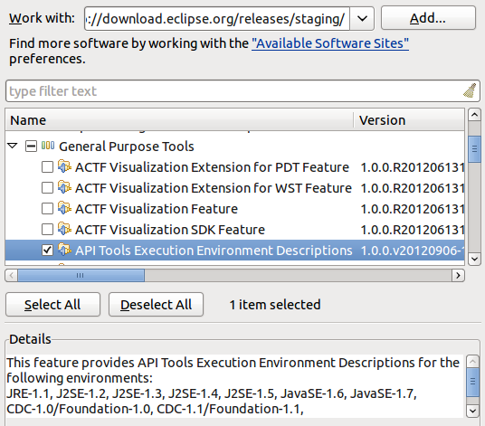
|
| API Tools allows @noreference Javadoc tag on types |
API Tools now allows the use of the @noreference Javadoc tag on types (classes, interfaces,
annotations and enums).
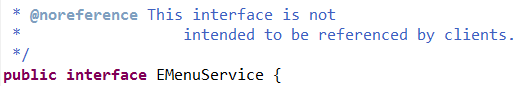
Placing this tag restricts the API so that any reference to that type or its members
will be flagged as invalid API use.
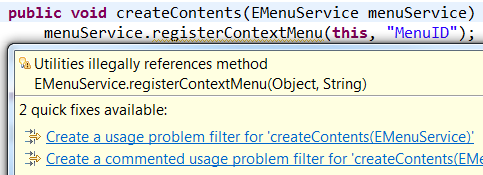
To mark a type in an API package as not being API, tag it as @noreference,
@noextend and @noinstantiate (or @noimplement). This ensures that
no client can access it via valid API and the type could later be removed.
|
| API Tools Javadoc tags check visibility |
A member that is not publicly visible, such as a method or field marked private, is not part
of API. Any API Tools Javadoc tags on it are invalid. Now, API Tools will also check if a
member is not visible because of the visibility of an enclosing type. If the member is not visible,
any tags on it will be considered invalid.
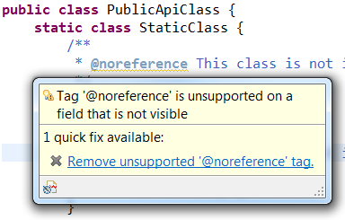
Tag validation is turned off by default. To turn it on for your API Tools enabled project, open
Project Properties > Plug-in Development > API Errors/Warnings. Set
API Use > General > Unsupported use of API Javadoc tags to Warning or Error.
|
| API Tools has limited support for pre-OSGi Eclipse plug-ins |
Eclipse plug-ins created before 3.1 did not contain an OSGi bundle manifest. API Tools
can now convert the pre-OSGi plug-ins to valid components in an API baseline. This allows
analysis, use and freeze scans to process plug-ins that depend on pre-OSGi plug-ins instead
of failing to resolve.

An OSGi runtime is required to do the conversion. Tasks run using Eclipse AntRunner
or the API Use Report external tools launch configuration can convert the plug-ins. Tasks
run from the command line Ant runner will skip pre-OSGi plug-ins.
|
| API Tools Analysis and Freeze tasks can run with unresolved bundles |
The API Tools Analysis and API Freeze Ant tasks will now process bundles
with resolver errors such as missing dependencies. This means you can now get analysis results
for an incomplete product.
The Ant tasks produce reports based on a reference baseline and a profile. Previously both
the baseline and the profile had to describe complete products. Any bundle that had resolver
errors due to missing dependencies would be skipped. Now these bundles will be processed.
Resolver errors can affect the results, therefore a list of resolver errors is included in the XML output
and warnings are added to the HTML report. To return to the old behavior of skipping
unresolved bundles, you can set processunresolvedbundles="false" on your Ant task.
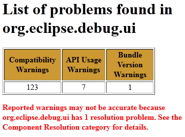
|
| Problem filters apply to API Tools use scans |
Problem filter files (.api_filter) can be used to filter problems reported by the API Tools analysis
task and the workspace analysis builder. These filter files can now be applied to API Tools use scans.
Reference problems that are filtered out of the analysis results can also be filtered from the results
of use scans.
Filters are specified in the task using the same property as the analysis task. Set the filters
attribute on the apitooling.apiuse task, specifying the root directory of API filter files. Each
filter file must be in a folder with a filename matching the component name the filter file applies to.
|
| API Tools tasks warn about missing include or exclude files |
Many of the API Tools tasks, including Analysis, API Use, and API Freeze, provide includelist and
excludelist attributes which can be used to limit the reported problems. Previously,
if you set an include or exclude list, but the file wasn't found, the task would continue without warning
about the incorrect filtering. Now a missing include or exclude list will result in the task failing with
an explanation.
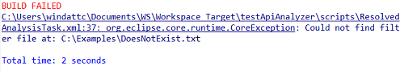
|
Views and Editors |
| Improved feature selection dialog |
The feature selection dialog used in wizards and editors has been enhanced with better wildcard support
and filtering options.
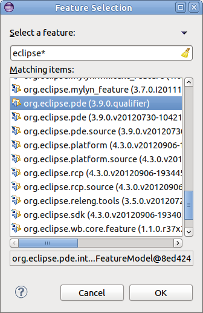
|
| Javadoc hover available in plug-in manifest editor |
When editing the plugin.xml or manifest.mf files using the Plug-in Manifest Editor,
opening content assist for type proposals will now display additional Javadoc information.
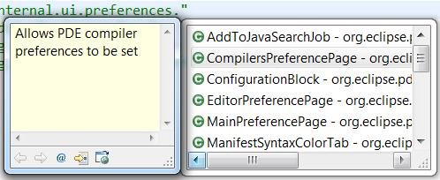
|
| New import package quick fixes |
New quick fixes are available when you have an unresolved type in a Java file. If the unresolved type
can be found in a package exported by a plug-in, a quick fix will be available to add an import
package entry to your plug-in manifest. There is also a quick fix to add the exporting plug-in to
your manifest's require bundle header.
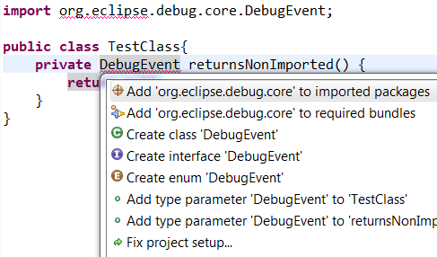
If a package providing the type is available but the package is not exported by its plug-in, a quick fix will
offer to fix the providing plug-in's manifest. Only plug-ins in the workspace can be modified this
way.
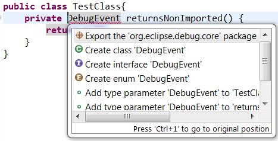
|
| Bundles in the category editor |
The category editor now supports putting individual bundles into categories.
The category editor creates a category.xml that can define categories that the contents of
a p2 repository should be organized into. Previously only features could be specified as belonging
to a category and be visible to users. Now individual bundles can be added to the category.xml.
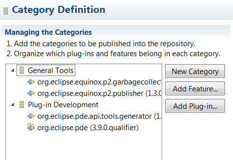
|
| Plug-in image browser view |
A new view has been added to PDE. The Plug-in Image Browser view displays icons and other
images from your target platform, running application or current workspace.
When an image is selected, additional information is displayed at the bottom of the view. The
reference text can be used in plug-in extensions to refer to images in other bundles.
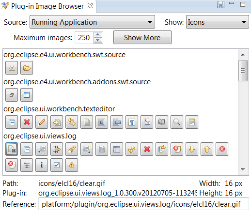
|
Misc |
| Launch configurations choose default execution environment |
New PDE launch configurations (Eclipse Application, JUnit Plug-in Test, OSGi Framework) will
use a default execution environment to determine which Java runtime environment to launch with.
The launch configuration can be changed to use a different execution environment or a specific
JRE on the Main tab.
To find a valid execution environment, all known environments are checked against each bundle
or plug-in that will be launched. Only an execution environment that is valid for all
plug-ins and bundles will be selected. If no valid environment is found, a default JRE
will be chosen as before.
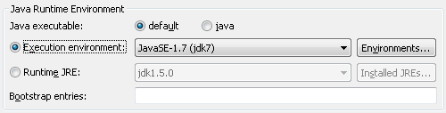
The JRE associated with the selected execution environment will be used to launch. To change
which JRE is associated with an execution environment, use the Preferences > Java > Installed JREs >
Execution Environments preference page.
|
| PDE UI requires a 1.5 EE |
The bundle required execution environment for the PDE UI bundles org.eclipse.pde.core and
org.eclipse.pde.ui is now J2SE-1.5.
|
| New API to contribute to the classpath of plug-in projects |
New API in PDE allows you to add additional classpath entries to a plug-in project. Contribute a
Plug-in Classpath Contributor via the org.eclipse.pde.core.pluginClasspathContributors
extension point. Whenever the PDE classpath is computed or a new plug-in dependency is added, your classpath
contributor will be queried for additional entries.
If you are using Equinox Adapter hooks to load additional libraries at runtime you can use this API to add
the correct libraries to the classpath at build time.
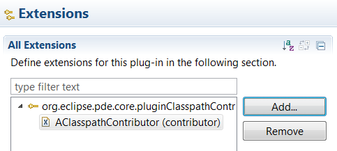
|
| Updating the classpath requires a workspace lock |
When a change is made to a plug-in that forces a classpath update, an update job is created that
modifies the Plug-in Dependencies classpath container in the background. This job now acquires a workspace lock
to prevent other operations such as builders from running on a stale classpath.
This behaviour can be enabled in 4.2.2 by setting the system property pde.lockWorkspaceForClasspath to
true.
|
| Default start level settings apply to all plug-ins |
When editing the Plug-ins tab of an Eclipse Application launch configuration, the Default
Start level and Default Auto-start settings chosen at the top of the tab will be used when launching with
all workspace and enabled target plug-ins. Previously this setting would only be used when launching a
specific list of plug-ins.
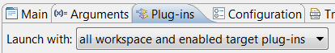
|
| Running from PDE editors remembers previous launch |
The PDE editors allow applications to be launched from the top toolbar of the Manifest, Plug-in
and Product editors. By default PDE only provides one type of application to launch. However, if you have additional tooling
installed such as RAP Tools, different application launches will be available in a drop down menu.
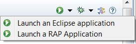
This menu now remembers which application was launched most recently and puts it at the top of the list. The most
recent choice will be launched if the run button is pressed. The order is saved between workbench
restarts.
|
| JUnit plug-in tests can run on Eclipse platform 4 workbench |
Applications that use the Eclipse Platform 4 workbench API can now
use JUnit Plug-in Test launch configurations to test their plug-ins. Previously
the tests would require the 3.x workbench API from the org.eclipse.ui bundle to
hook into the workbench lifecycle.
|